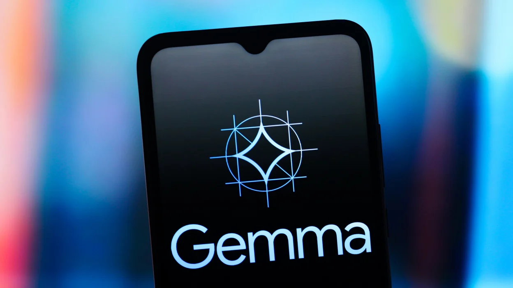

My Journey Into Neural Networks: From Confusion to Building
The honest, unfiltered story of how I went from staring at equations to building neural networks from scratch. Including tiny_cnn, The Residual Stream, and what's coming next.
Read ArticleBuilding neural networks from scratch, learning in public, and community leadership in Uganda's tech ecosystem. Written honestly, from the heart.
Building from scratch, learning in public. One layer at a time.

The honest, unfiltered story of how I went from staring at equations to building neural networks from scratch. Including tiny_cnn, The Residual Stream, and what's coming next.
Read Article
From Gemini's secret knowledge distillation to Gemma 2, CodeGemma, PaliGemma, and RecurrentGemma — the full story of Google's open-weight revolution and what it means for developers in Africa.
Read ArticleBuilding tech communities, showing up, and growing the Ugandan developer ecosystem.

From co-organising Agent Camp to winning 2nd place at Build With AI Makerere, attending Notion Community Day, and Logos Circles Kampala. Real stories from Uganda's tech events.
Read Article